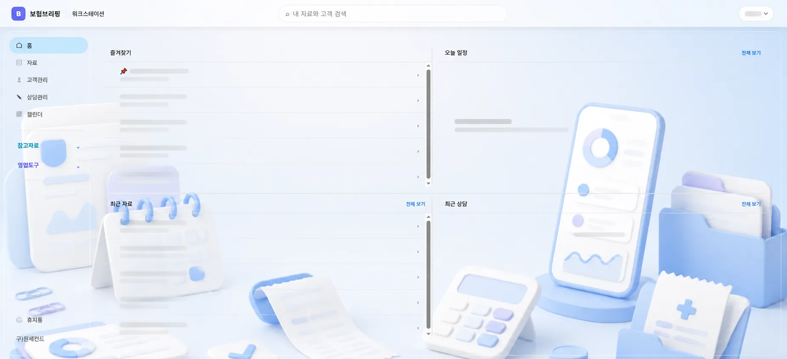

01
오늘 일정
하루는 캘린더에서 시작합니다. 오늘 연락할 고객, 처리할 상담, 챙길 기념일이 보이면 출근 직후 해야 할 일이 정리됩니다.
매일매일 최신상품과 영업이슈를 날짜별로 확인하세요.
INSUWORK
보험워크는 설계사가 아침에 출근해서 “오늘 뭐하지?”로 멈추지 않도록 만든 업무 흐름입니다. 오늘 일정이 있고, 내일 챙길 고객이 보이고, 그 고객에게 맞는 자료를 미리 준비할 수 있어야 하루가 움직입니다.
보험워크 시작하기
하루는 캘린더에서 시작합니다. 오늘 연락할 고객, 처리할 상담, 챙길 기념일이 보이면 출근 직후 해야 할 일이 정리됩니다.
청약 후 한 달, 91일, 6개월, 1년처럼 놓치면 안 되는 관리 시점을 고객 리스트와 일정으로 이어둡니다.
내일 예정된 고객을 확인하고 필요한 상품자료, 스크립트, 메모를 미리 정리해 연락 전 준비 시간을 줄입니다.
오늘의 연락이 추가 상담이 될지, 단순 안부가 될지는 모릅니다. 중요한 건 상담 후 다음 할 일을 다시 일정으로 남기는 것입니다.
DAILY LOOP
보험워크의 중심은 기능이 아니라 반복되는 영업 루틴입니다. 일정이 고객관리를 만들고, 고객관리가 상담 준비를 만들고, 상담 결과가 다시 다음 일정을 만듭니다.
INSURANCE BRIEFING
오늘 할 일을 끝내고, 내일 할 일을 준비하는 흐름을 보험워크 안에 쌓아갑니다.